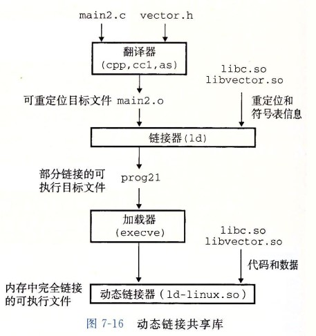

操作系统
基本概念梳理
基本特征
并发
并发是指宏观上在一段时间内能同时运行多个程序，而并行则指同一时刻能运行多个指令。
并行需要硬件支持，如多流水线、多核处理器或者分布式计算系统。
操作系统通过引入进程和线程，使得程序能够并发运行。
共享
共享是指系统中的资源可以被多个并发进程共同使用。
有两种共享方式：互斥共享和同时共享。
互斥共享的资源称为临界资源，例如打印机等，在同一时刻只允许一个进程访问，需要用同步机制来实现互斥访问。
虚拟
虚拟技术把一个物理实体转换为多个逻辑实体。
主要有两种虚拟技术：时（时间）分复用技术和空（空间）分复用技术。
多个进程能在同一个处理器上并发执行使用了时分复用技术，让每个进程轮流占用处理器，每次只执行一小个时间片并快速切换。
虚拟内存使用了空分复用技术，它将物理内存抽象为地址空间，每个进程都有各自的地址空间。地址空间的页被映射到物理内存，地址空间的页并不需要全部在物理内存中，当使用到一个没有在物理内存的页时，执行页面置换算法，将该页置换到内存中。
异步
异步指进程不是一次性执行完毕，而是走走停停，以不可知的速度向前推进。
基本功能
进程管理
进程控制、进程同步、进程通信、死锁处理、处理机调度等
内存管理
内存分配、地址映射、内存保护与共享、虚拟内存等
文件管理
文件存储空间的管理、目录管理、文件读写管理和保护等
设备管理
完成用户的 I/O 请求，方便用户使用各种设备，并提高设备的利用率。
主要包括缓冲管理、设备分配、设备处理、虛拟设备等。
系统调用
如果一个进程在用户态需要使用内核态的功能，就进行系统调用从而陷入内核，由操作系统代为完成。
Linux 的 系统调用主要有：
| Task | Commands |
|---|---|
| 进程控制 | fork();exit();wait(); |
| 进程通信 | pipe();shmget();mmap(); |
| 文件操作 | open();read();write(); |
| 设备操作 | ioctl();read();write(); |
| 信息维护 | getpid();alarm();sleep(); |
| 安全 | chomd();umask();chown(); |
大内核和微内核
大内核
大内核是将操作系统功能作为一个紧密结合的整体放到内核。
由于各模块共享信息，因此有很高的性能。
微内核
由于操作系统不断复杂，因此将一部分操作系统功能移出内核，从而降低内核的复杂性。移出的部分根据分层的原则划分成若干服务，相互独立。
在微内核结构下，操作系统被划分成小的、定义良好的模块，只有微内核这一个模块运行在内核态，其余模块运行在用户态。
因为需要频繁地在用户态和核心态之间进行切换，所以会有一定的性能损失。

中断分类
外中断
由 CPU 执行指令以外的事件引起，如 I/O 完成中断，表示设备输入/输出处理已经完成，处理器能够发送下一个输入/输出请求。此外还有时钟中断、控制台中断等。
异常
由 CPU 执行指令的内部事件引起，如非法操作码、地址越界、算术溢出等。
陷入
在用户程序中使用系统调用
进程与线程
对于有线程系统：
- 进程是资源分配的独立单位
- 线程是资源调度的独立单位
对于无线程系统：
- 进程是资源调度和分配的独立单位
进程
进程是资源分配的基本单位。
进程控制块 (Process Control Block, PCB) 描述进程的基本信息和运行状态，所谓的创建进程和撤销进程，都是指对 PCB 的操作。
下图显示了 4 个程序创建了 4 个进程，这 4 个进程可以并发地执行。
线程
线程是独立调度的基本单位。
一个进程中可以有多个线程，它们共享进程资源。
QQ 和浏览器是两个进程，浏览器进程里面有很多线程，例如 HTTP 请求线程、事件响应线程、渲染线程等等，线程的并发执行使得在浏览器中点击一个新链接从而发起 HTTP 请求时，浏览器还可以响应用户的其它事件。
进程与线程之间的区别
拥有资源
进程是资源分配的基本单位，但是线程不拥有资源，线程可以访问隶属进程的资源。调度
线程是独立调度的基本单位，在同一进程中，线程的切换不会引起进程切换，从一个进程中的线程切换到另一个进程中的线程时，会引起进程切换。系统开销
由于创建或撤销进程时，系统都要为之分配或回收资源，如内存空间、I/O 设备等，所付出的开销远大于创建或撤销线程时的开销。类似地，在进行进程切换时，涉及当前执行进程 CPU 环境的保存及新调度进程 CPU 环境的设置，而线程切换时只需保存和设置少量寄存器内容，开销很小。通信方面
线程间可以通过直接读写同一进程中的数据进行通信，但是进程通信需要借助 IPC。
进程之间的通信方式以及优缺点
管道（PIPE）
- 有名管道：一种半双工的通信方式，它允许无亲缘关系进程间的通信
- 优点：可以实现任意关系的进程间的通信
- 缺点：
- 长期存于系统中，使用不当容易出错
- 缓冲区有限
- 无名管道：一种半双工的通信方式，只能在具有亲缘关系的进程间使用（父子进程）
- 优点：简单方便
- 缺点：
- 局限于单向通信
- 只能创建在它的进程以及其有亲缘关系的进程之间
- 缓冲区有限
- 有名管道：一种半双工的通信方式，它允许无亲缘关系进程间的通信
信号量（Semaphore）：一个计数器，可以用来控制多个进程对共享资源的访问
- 优点：可以同步进程
- 缺点：信号量有限
信号（Signal）：一种比较复杂的通信方式，用于通知接收进程某个事件已发生
消息队列（Message Queue）：是消息的链表，存放在内核中并由消息队列标识符标识
- 优点：可以实现任意进程间的通信，并通过系统调用函数来实现消息发送和接收之间的同步，无需考虑同步问题，方便。
- 缺点：消息的复制需要额外消耗CPU时间，不适宜于信息量大或操作频繁的场合。
共享内存（Shared Memory）：映射一段能被其他进程所访问的内存，这段共享内存由一个进程创建，但多个进程都可以访问。
- 优点：无须复制，快捷，信息量大
- 缺点：
- 通信是通过将共享空间缓冲区直接附加到进程的虚拟地址空间中来实现的，因此进程间的读写操作的同步有问题。
- 利用内存缓冲区直接交换信息，内存的实体存在于计算机中，只能同一个计算机系统中的诸多进程共享，不方便网络通信。
套接字（socket）：可以用于不同计算机间的进程通信
- 优点：
- 传输数据为字节级，传输数据可以自定义，数据量小效率高
- 传输数据时间短，性能高
- 适合于客户端和服务器之间信息的实时交互
- 可以加密，数据安全性强
- 缺点：需对传输的数据进行解析，转化成应用级的数据
- 优点：
线程之间的通信方式
锁机制：包括互斥锁/量（mutex）、读写锁（reader-writer lock）、自旋锁（spin lock）、条件变量（condition）
- 互斥锁/量（mutex）：提供了以排他方式防止数据结构被并发修改的方法
- 读写锁（reader-writer lock）：允许多个线程同时读共享数据，而对写操作是互斥的
- 自旋锁（spin lock）与互斥锁类似，都是为了保护共享资源。互斥锁是当资源被占用，申请者进入睡眠状态；自旋锁则是循环检测保持者是否已经释放锁。自旋锁的使用模式和互斥锁很类似，只是在加锁后，有线程试图再次执行加锁操作的时候，该线程不会阻塞，而处于循环等待的忙等状态（CPU不能够做其他事情）。 所以自旋锁适用的情况是：锁被持有的时间较短，而且进程并不希望在重新调度上花费太多的成本。
- 条件变量（condition）：可以以原子的方式阻塞进程，直到某个特定条件为真为止。对条件的测试是在互斥锁的保护下进行的，条件变量始终与互斥锁一起使用。
信号量机制（Semaphore）：
- 无名线程信号量
- 命名线程信号量
- 信号机制（Signal）：类似进程间的信号处理
- 屏障（barrier）：屏障允许每个线程等待，直到所有的合作进程都达到某一点，然后从该点继续执行。
线程间的通信目的主要是用于线程同步，所以线程间没有像进程通信中的用于数据交换的通信机制。
进程之间私有和共享的资源
- 私有：地址空间、堆、全局变量、栈、寄存器
- 共享：代码段、公共数据、进程目录、进程ID
线程之间私有和共享的资源
- 私有：线程栈、寄存器、程序计数器
- 共享：堆、地址空间、全局变量、静态变量
多进程与多线程之间的对比、优劣和选择
对比
| 对比维度 | 多进程 | 多线程 | 总结 |
|---|---|---|---|
| 数据共享、同步 | 数据共享复杂，需要用IPC；数据是分开的，同步简单 | 因为共享进程数据，数据共享简单，但是也因为这个原因导致同步复杂 | 各有优劣 |
| 内存、CPU | 占用内存多，切换复杂，CPU利用率低 | 占用内存少，切换简单，CPU利用率高 | 线程占优 |
| 创建销毁、切换 | 创建销毁和切换复杂，速度慢 | 创建销毁和切换简单，速度快 | 线程占优 |
| 编程、调试 | 编程简单，调试简单 | 编程复杂，调试复杂 | 进程占优 |
| 可靠性 | 进程间不会互相影响 | 一个线程挂掉将导致整个进程挂掉 | 进程占优 |
| 分布式 | 适应于多核、多机分布式；如果一台机器不够，扩展到多台机器比较简单 | 适应于多核分布式 | 进程占优 |
优劣总结
| 优劣 | 多进程 | 多线程 |
|---|---|---|
| 优点 | 编程、调试简单，可靠性较高 | 创建、销毁、切换速度快，内存、资源占用小 |
| 缺点 | 创建、销毁、切换速度慢，内存、资源占用大 | 编程、调试复杂，可靠性较差 |
选择策略
- 需要频繁创建销毁的优先用线程
- 需要进行大量计算的优先使用线程
- 强相关的处理用线程，弱相关的处理用进程
- 可能要扩展到多机分布的用进程，多核分布的用线程
- 都满足需求的情况下，用最熟悉的方式
Linux内核的同步方式
原因
在现代操作系统里，同一时间有可能有多个内核执行流在执行，因此内核其实像多进程、多线程编程一样也需要一些同步机制来同步各执行单元对共享数据的访问。尤其在多处理器系统上，更需要一些同步机制来同步不同处理器上的执行单元对共享的数据的访问。
同步方式
- 原子操作
- 信号量（semaphore）
- 读写信号量（rw_semaphore）
- 自旋锁（spin lock）
- 大内核锁（BKL, Big Kernel Lock）
- 读写锁（rwlock）
- 大读者锁（brlock-big reader lock）
- 读-拷贝修改（RCU, Read-Copy Updates）
- 顺序锁
死锁 参考博客
定义
多线程以及多进程改善了系统资源的利用率并提高了系统的处理能力。然而，并发执行也带来了新的问题——死锁。
死锁是指两个或两个以上的进程（线程）在运行过程中因争夺资源而造成的一种僵局（Deadly-Embrace)，若无外力作用，这些进程（线程）都将无法向前推进。
原因
- 系统资源不足
- 资源分配不当
- 进程运行推进顺序不合适
产生条件
- 互斥条件：进程要求对所分配的资源进行排他性控制，即在一段时间内某资源仅为一个进程所占优。此时若有其他进程请求该资源，则请求进程只能等待。
- 请求和保持：进程已经保持了至少一个资源，但又提出了新的资源请求，而该资源已被其他进程占优，此时请求进程被阻塞，但对自己已获得的资源保持不放。
- 不剥夺：进程所获得的资源在未使用完毕之前，不能被其他进程强行夺走，即只能由获得该资源的进程自己来释放（主动释放）。
- 环路（循环等待条件）：存在一种进程资源的循环等待链，链中每一个进程已获得的资源同时被链中下一个进程所请求。
处理死锁的方法
- 预防死锁：通过设置某些限制条件，去破坏产生死锁的四个必要条件中的一个或几个条件，来防止死锁的发生。
- 避免死锁：在资源的动态分配过程中，用某种方法去防止系统进入不安全的状态，从而避免死锁的发生。
- 检测死锁：允许系统在运行过程中发生死锁，但可设置检测措施及时检测死锁的发生，并采取适当措施加以解除。
- 解除死锁：在检测出死锁后，采用适当措施把进程从死锁状态中解除出来。
预防
- 打破互斥条件：改造独占性资源为虚拟资源。但一般来说，大部分资源已无法改造，互斥条件无法被破坏。
- 打破不可抢占（不剥夺）条件：如果占有某些资源的一个进程进行进一步资源请求被拒绝，则该进程必须释放它最初占有的资源，如果有必要，可再次请求这些资源和另外的资源。一进程占有一独占性资源后又申请一独占性资源，则必须释放原占有的资源。
- 打破请求和保持的条件（破坏占有并等待）：破坏“占有并等待”条件，就是在系统中不允许进程在已获得某种资源的情况下，申请其他资源。即要想出一个办法，阻止进程在持有资源的同时申请其他资源
- 创建进程时，要求它申请所需的全部资源，系统或满足其所有要求，或什么也不给它。这是所谓的 “ 一次性分配”方案。
- 要求每个进程提出新的资源申请前，释放它所占有的资源。这样，一个进程在需要资源S时，须先把它先前占有的资源R释放掉，然后才能提出对S的申请，即使它可能很快又要用到资源R。
破坏“循环等待”条件：破坏“循环等待”条件的一种方法，是将系统中的所有资源统一编号，进程可在任何时刻提出资源申请，但所有申请必须按照资源的编号顺序（升序）提出。这样做就能保证系统不出现死锁。
银行家算法 参考博客
主机字节序与网络字节序
主机字节序（CPU字节序）
概念
主机字节序又叫CPU字节序，其不是由操作系统决定的，而是由CPU指令集架构决定的。主机字节序分为两种：
- 大端字节序（Big Endian）：高序字节存储在低位地址，低序字节存储在高位地址
- 小端字节序（Little Endian）：高序字节存储在高位地址，低序字节存储在低位地址
存储方式
32位整数 0x12345678 是从起始位置为0x00的地址开始存放，则：
| 内存地址 | 0x00 | 0x01 | 0x02 | 0x03 |
|---|---|---|---|---|
| 大端 | 12 | 34 | 56 | 78 |
| 小端 | 78 | 56 | 34 | 12 |


判断大端还是小端
1 |
|
各架构处理器的字节序
- x86（Intel、AMD）、MOS Technology 6502、Z80、VAX、PDP-11 等处理器为小端序；
- Motorola 6800、Motorola 68000、PowerPC 970、System/370、SPARC（除 V9 外）等处理器为大端序；
- ARM（默认小端序）、PowerPC（除 PowerPC 970 外）、DEC Alpha、SPARC V9、MIPS、PA-RISC 及 IA64 的字节序是可配置的。
网络字节序
网络字节顺序是TCP/IP中规定好的一种数据表示格式，它与具体的CPU类型、操作系统等无关，从而可以保证数据在不同主机之间传输时能够被正确解释。
网络字节顺序采用：大端（Big Endian）排列方式
页面置换算法
在程序运行过程中，如果要访问的页面不在内存中，就发生缺页中断从而将该页调入内存中。此时如果内存已无空闲空间，系统必须从内存中调出一个页面到磁盘对换区中来腾出空间。
页面置换算法和缓存淘汰策略类似，可以将内存看成磁盘的缓存。在缓存系统中，缓存的大小有限，当有新的缓存到达时，需要淘汰一部分已经存在的缓存，这样才有空间存放新的缓存数据。
页面置换算法的主要目标是使页面置换频率最低（也可以说缺页率最低）。
分类
- 全局置换：在整个内存空间置换
- 局部置换：在本进程中进行置换
算法
全局
- 工作集算法
- 缺页率置换算法
局部
- 最佳置换算法（OPT）
- 先进先出置换算法（FIFO）
- 最近最久未使用（LRU）算法
- 时钟（Clock） 算法
最佳置换算法（OPT, Optimal Replacement Algorithm）
所选择的被换出的页面将是最长时间内不再被访问的页面，通常可以保证获得最低的缺页率。
是一种理论上的算法，因为无法知道一个页面多长时间不再被访问。
举例：一个系统为某个进程分配了三个物理块，并有如下页面引用序列：1
7,0,1,2,0,3,0,4,2,3,0,3,2,1,2,0,1,7,0,1
开始运行时，先将7,0,1三个页面装入内存。当进程要访问页面2时，产生缺页终端，会将页面7换出，因为页面7再次被访问的时间最长。
最近最久未使用（LRU, Least Recently Used）
虽然无法知道将来要使用的页面情况，但是可以知道过去使用页面的情况。LRU 将最近最久未使用的页面换出。
为了实现 LRU，需要在内存中维护一个所有页面的链表。当一个页面被访问时，将这个页面移到链表表头。这样就能保证链表表尾的页面是最近最久未访问的。
因为每次访问都需要更新链表，因此这种方式实现的 LRU 代价很高。
1 | 4，7，0，7，1，0，1，2，1，2，6 |

最近未使用（NRU, Not Recently Used）
每个页面都有两个状态位：R 与 M，当页面被访问时设置页面的 R=1，当页面被修改时设置 M=1。其中 R 位会定时被清零。可以将页面分成以下四类：
R=0，M=0
R=0，M=1
R=1，M=0
R=1，M=1
当发生缺页中断时，NRU 算法随机地从类编号最小的非空类中挑选一个页面将它换出。
NRU 优先换出已经被修改的脏页面（R=0，M=1），而不是被频繁使用的干净页面（R=1，M=0）。
先进先出（FIFO, First In First Out）
选择换出的页面是最先进入的页面。
该算法会将那些经常被访问的页面也被换出，从而使缺页率升高。
第二次机会算法
FIFO 算法可能会把经常使用的页面置换出去，为了避免这一问题，对该算法做一个简单的修改：
当页面被访问 (读或写) 时设置该页面的 R 位为 1。需要替换的时候，检查最老页面的 R 位。如果 R 位是 0，那么这个页面既老又没有被使用，可以立刻置换掉；如果是 1，就将 R 位清 0，并把该页面放到链表的尾端，修改它的装入时间使它就像刚装入的一样，然后继续从链表的头部开始搜索。
编译和链接
编译系统
- 预处理阶段：处理以 # 开头的预处理命令；
- 编译阶段：翻译成汇编文件；
- 汇编阶段：将汇编文件翻译成可重定位目标文件；
- 链接阶段：将可重定位目标文件和 printf.o 等单独预编译好的目标文件进行合并，得到最终的可执行目标文件。

静态链接
静态链接器以一组可重定位目标文件为输入，生成一个完全链接的可执行目标文件作为输出。链接器主要完成以下两个任务：
符号解析：每个符号对应于一个函数、一个全局变量或一个静态变量，符号解析的目的是将每个符号引用与一个符号定义关联起来。
重定位：链接器通过把每个符号定义与一个内存位置关联起来，然后修改所有对这些符号的引用，使得它们指向这个内存位置。
目标文件
- 可执行目标文件：可以直接在内存中执行；
- 可重定位目标文件：可与其它可重定位目标文件在链接阶段合并，创建一个可执行目标文件；
- 共享目标文件：这是一种特殊的可重定位目标文件，可以在运行时被动态加载进内存并链接；
动态链接
静态库有以下两个问题：
当静态库更新时那么整个程序都要重新进行链接；
对于 printf 这种标准函数库，如果每个程序都要有代码，这会极大浪费资源。
共享库是为了解决静态库的这两个问题而设计的，在 Linux 系统中通常用 .so 后缀来表示，Windows 系统上它们被称为 DLL。它具有以下特点：
- 在给定的文件系统中一个库只有一个文件，所有引用该库的可执行目标文件都共享这个文件，它不会被复制到引用它的可执行文件中；
- 在内存中，一个共享库的 .text 节（已编译程序的机器代码）的一个副本可以被不同的正在运行的进程共享。

Linux 部分知识补充
重点
- 能简单实用 cat, grep, cut 等命令进行一些操作
- 文件系统相关的原理， inode和block等概念，数据恢复
- 硬链接与软链接
- 进程管理相关，僵尸进程和孤儿进程，SIGCHLD
常用操作和指令 参考github 参考资料
孤儿进程
一个父进程退出，而它的一个或多个子进程还在运行，那么这些子进程将成为孤儿进程。
孤儿进程将被 init 进程（进程号为 1）所收养，并由 init 进程对它们完成状态收集工作。
由于孤儿进程会被 init 进程收养，所以孤儿进程不会对系统造成危害。
守护进程
守护进程是脱离终端并在后台运行的进程，执行过程中信息不会显示在终端上并且也不会被终端发出的信号打断。
僵尸进程
一个子进程的进程描述符在子进程退出时不会释放，只有当父进程通过 wait() 或 waitpid() 获取了子进程信息后才会释放。如果子进程退出，而父进程并没有调用 wait() 或 waitpid()，那么子进程的进程描述符仍然保存在系统中，这种进程称之为僵尸进程。
僵尸进程通过 ps 命令显示出来的状态为 Z（zombie）。
系统所能使用的进程号是有限的，如果产生大量僵尸进程，将因为没有可用的进程号而导致系统不能产生新的进程。
要消灭系统中大量的僵尸进程，只需要将其父进程杀死，此时僵尸进程就会变成孤儿进程，从而被 init 进程所收养，这样 init 进程就会释放所有的僵尸进程所占有的资源，从而结束僵尸进程。
计算机网络
计算机网络体系结构
各层作用及协议详解
TCP与UDP详解
UDP和TCP的特点
UDP
- 用户数据报协议 UDP（User Datagram Protocol）是无连接的，尽最大可能交付，没有拥塞控制，面向报文（对于应用程序传下来的报文不合并也不拆分，只是添加 UDP 首部），支持一对一、一对多、多对一和多对多的交互通信。
- 无连接
- 尽最大努力交付
- 面向报文
- 没有拥塞控制
- 支持一对一、一对多、多对一、多对多的交互通信
- 首部开销小
TCP
- 传输控制协议 TCP（Transmission Control Protocol）是面向连接的，提供可靠交付，有流量控制，拥塞控制，提供全双工通信，面向字节流（把应用层传下来的报文看成字节流，把字节流组织成大小不等的数据块），每一条 TCP 连接只能是点对点的（一对一）。
- 面向连接
- 只能点对点（一对一）通信
- 可靠交互
- 全双工通信
- 面向字节流
UDP的首部格式
首部字段只有 8 个字节，包括源端口、目的端口、长度、检验和。12 字节的伪首部是为了计算检验和临时添加的。
TCP的首部格式
序号 ：用于对字节流进行编号，例如序号为 301，表示第一个字节的编号为 301，如果携带的数据长度为 100 字节，那么下一个报文段的序号应为 401。
确认号 ：期望收到的下一个报文段的序号。例如 B 正确收到 A 发送来的一个报文段，序号为 501，携带的数据长度为 200 字节，因此 B 期望下一个报文段的序号为 701，B 发送给 A 的确认报文段中确认号就为 701。
数据偏移 ：指的是数据部分距离报文段起始处的偏移量，实际上指的是首部的长度。
确认 ACK ：当 ACK=1 时确认号字段有效，否则无效。TCP 规定，在连接建立后所有传送的报文段都必须把 ACK 置 1。
同步 SYN ：在连接建立时用来同步序号。当 SYN=1，ACK=0 时表示这是一个连接请求报文段。若对方同意建立连接，则响应报文中 SYN=1，ACK=1。
终止 FIN ：用来释放一个连接，当 FIN=1 时，表示此报文段的发送方的数据已发送完毕，并要求释放连接。
窗口 ：窗口值作为接收方让发送方设置其发送窗口的依据。之所以要有这个限制，是因为接收方的数据缓存空间是有限的。

TCP的三次握手

假设 A 为客户端，B 为服务器端。
首先 B 处于 LISTEN（监听）状态，等待客户的连接请求。
A 向 B 发送连接请求报文，SYN=1，ACK=0，选择一个初始的序号 x。
B 收到连接请求报文，如果同意建立连接，则向 A 发送连接确认报文，SYN=1，ACK=1，确认号为 x+1，同时也选择一个初始的序号 y。
A 收到 B 的连接确认报文后，还要向 B 发出确认，确认号为 y+1，序号为 x+1。
B 收到 A 的确认后，连接建立。
三次握手的原因
第三次握手是为了防止失效的连接请求到达服务器，让服务器错误打开连接。
客户端发送的连接请求如果在网络中滞留，那么就会隔很长一段时间才能收到服务器端发回的连接确认。客户端等待一个超时重传时间之后，就会重新请求连接。但是这个滞留的连接请求最后还是会到达服务器，如果不进行三次握手，那么服务器就会打开两个连接。如果有第三次握手，客户端会忽略服务器之后发送的对滞留连接请求的连接确认，不进行第三次握手，因此就不会再次打开连接。
TCP的四次挥手

以下描述不讨论序号和确认号，因为序号和确认号的规则比较简单。并且不讨论 ACK，因为 ACK 在连接建立之后都为 1。
A 发送连接释放报文，FIN=1。
B 收到之后发出确认，此时 TCP 属于半关闭状态，B 能向 A 发送数据但是 A 不能向 B 发送数据。
当 B 不再需要连接时，发送连接释放报文，FIN=1。
A 收到后发出确认，进入 TIME-WAIT 状态，等待 2 MSL（最大报文存活时间）后释放连接。
B 收到 A 的确认后释放连接。
四次挥手的原因
客户端发送了 FIN 连接释放报文之后，服务器收到了这个报文，就进入了 CLOSE-WAIT 状态。这个状态是为了让服务器端发送还未传送完毕的数据，传送完毕之后，服务器会发送 FIN 连接释放报文。
Time-WAIT
客户端接收到服务器端的 FIN 报文后进入此状态，此时并不是直接进入 CLOSED 状态，还需要等待一个时间计时器设置的时间 2MSL。这么做有两个理由：
确保最后一个确认报文能够到达。如果 B 没收到 A 发送来的确认报文，那么就会重新发送连接释放请求报文，A 等待一段时间就是为了处理这种情况的发生。
等待一段时间是为了让本连接持续时间内所产生的所有报文都从网络中消失，使得下一个新的连接不会出现旧的连接请求报文。
TCP 可靠传输
- 确认和超时重传
- 数据合理分片和排序
- 流量控制
- 拥塞控制
- 数据校验
TCP与UDP的区别
- TCP 面向连接，UDP 是无连接的；
- TCP 提供可靠的服务，也就是说，通过 TCP 连接传送的数据，无差错，不丢失，不重复，且按序到达；UDP 尽最大努力交付，即不保证可靠交付
- TCP 的逻辑通信信道是全双工的可靠信道；UDP 则是不可靠信道
- 每一条 TCP 连接只能是点到点的；UDP 支持一对一，一对多，多对一和多对多的交互通信
- TCP 面向字节流（可能出现黏包问题），实际上是 TCP 把数据看成一连串无结构的字节流；UDP 是面向报文的（不会出现黏包问题）
- UDP 没有拥塞控制，因此网络出现拥塞不会使源主机的发送速率降低（对实时应用很有用，如 IP 电话，实时视频会议等）
- TCP 首部开销20字节；UDP 的首部开销小，只有 8 个字节
TCP黏包问题
原因
TCP 是一个基于字节流的传输服务（UDP 基于报文的），“流” 意味着 TCP 所传输的数据是没有边界的。所以可能会出现两个数据包黏在一起的情况。
解决
- 发送定长包。如果每个消息的大小都是一样的，那么在接收对等方只要累计接收数据，直到数据等于一个定长的数值就将它作为一个消息。
- 包头加上包体长度。包头是定长的 4 个字节，说明了包体的长度。接收对等方先接收包头长度，依据包头长度来接收包体。
- 在数据包之间设置边界，如添加特殊符号 \r\n 标记。FTP 协议正是这么做的。但问题在于如果数据正文中也含有 \r\n，则会误判为消息的边界。
- 使用更加复杂的应用层协议
HTTP
HTTP（HyperText Transfer Protocol，超文本传输协议）是一种用于分布式、协作式和超媒体信息系统的应用层协议。HTTP 是万维网的数据通信的基础。
请求方法
| 方法 | 意义 |
|---|---|
| OPTIONS | 请求一些选项信息，允许客户端查看服务器的性能 |
| GET | 请求指定的页面信息，并返回实体主体 |
| HEAD | 类似于get请求，只不过返回的响应中没有具体内容，用于获取报头 |
| POST | 向指定资源提交数据进行处理请求（例如提交表单或者上传文件）。数据被包含在请求体中。POST请求可能会导致新的资源的建立和/或已有资源的修改 |
| PUT | 从客户端向服务器传送的数据取代指定的文档的内容 |
| DELETE | 请求服务器删除指定的页面 |
| TRACE | 回显服务器收到的请求，主要用于测试或诊断 |
状态码(Status-Code)
- 1xx：表示通知信息，如请求收到了或正在进行处理
- 100 Continue：继续，客户端应继续其请求
- 101 Switching Protocols 切换协议。服务器根据客户端的请求切换协议。只能切换到更高级的协议，例如，切换到 HTTP 的新版本协议
- 2xx：表示成功，如接收或知道了
- 200 OK: 请求成功
- 3xx：表示重定向，如要完成请求还必须采取进一步的行动
- 301 Moved Permanently: 永久移动。请求的资源已被永久的移动到新 URL，返回信息会包括新的 URL，浏览器会自动定向到新 URL。今后任何新的请求都应使用新的 URL 代替
- 4xx：表示客户的差错，如请求中有错误的语法或不能完成
- 400 Bad Request: 客户端请求的语法错误，服务器无法理解
- 401 Unauthorized: 请求要求用户的身份认证
- 403 Forbidden: 服务器理解请求客户端的请求，但是拒绝执行此请求（权限不够）
- 404 Not Found: 服务器无法根据客户端的请求找到资源（网页）。通过此代码，网站设计人员可设置 “您所请求的资源无法找到” 的个性页面
- 408 Request Timeout: 服务器等待客户端发送的请求时间过长，超时
- 5xx：表示服务器的差错，如服务器失效无法完成请求
- 500 Internal Server Error: 服务器内部错误，无法完成请求
- 503 Service Unavailable: 由于超载或系统维护，服务器暂时的无法处理客户端的请求。延时的长度可包含在服务器的 Retry-After 头信息中
- 504 Gateway Timeout: 充当网关或代理的服务器，未及时从远端服务器获取请求
Socket

Socket中的read()、write()函数
1 | ssize_t read(int fd,void *buf, size_t count) |
read()
- read函数是负责从fd中读取内容
- 当读成功时，read返回实际所读的字节数
- 如果返回的值是0表示已经读到文件的结束了，小于0则表示出现了错误
- 如果错误为EINTR说明读是由中断引起的；如果是ECONNREST表示网络连接出了问题
write()
- write函数将buf中的nbytes字节内容写入文件描述符fd
- 成功时返回写的字节数。失败时返回-1，并设置errno变量。
- 在网络程序中，当我们向套接字文件描述符写时有两种可能。
- write的返回值大于0，表示写了部分或者是全部的数据
- 返回的值小于0，此时出现了错误
- 如果错误为EINTR表示在写的时候出现了中断错误；如果为EPIPE表示网络连接出现了问题（对方关闭了连接）